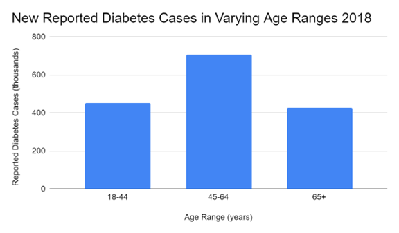
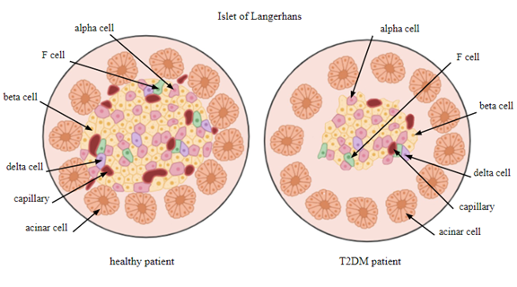

Abstract:
This paper discusses the function of dulaglutide (Trulicity), a glucagon-like peptide-1 (GLP-1) receptor agonist, in treating type 2 diabetes mellitus (T2DM). Dulaglutide’s mechanism of action and efficacy in treating cardiovascular diseases have gained the drug FDA-approval as a multi-purpose medication in comparison to other GLP-1 receptor agonists on the market. This analysis underscores the pharmacotoxicology profile of dulaglutide and offers comprehensive information on the cautious consideration needed in prescribing the injection to T2DM patients.
Keywords:
dulaglutide, type 2 diabetes mellitus, trulicity, weight-loss drug, glp-1 receptor agonists, insulin resistance
Introduction:
Type 2 diabetes mellitus (T2DM) is a chronic metabolic disorder that impacts 462 million people, which makes up 6.3% of the worldwide population [1]. In fact, in 2019, 37.3 million Americans were diagnosed with some form of diabetes, and 90-95% of them had T2DM [2]. Since then, cases of T2DM have only increased and have become more prevalent [3]. A patient with T2DM is unable to produce an adequate amount of insulin by their pancreas or experience insulin resistance. In both situations, patients experienced raised blood glucose levels [4]. Fortunately, Trulicity™, otherwise known as dulaglutide, is one among the various treatment options for T2DM that has been approved by the FDA.
This paper will explore the toxicity profile, efficacy, structure, and the course of action characterized by dulaglutide. It will showcase the drug’s management of T2DM and demonstrate the importance of GLP-1 analogs for the treatment of type 2 diabetes. In this paper, we will discuss the nature of dulaglutide’s mode of action, mechanisms, and its practical implications in assisting T2DM patients with high blood glucose levels.
The discovery of dulaglutide was a result of multiple advancements in research in treatments for diabetes. The groundbreaking work of Dr. John Eng and Rosalyn Yalow with the venom of Gila monsters led to the discovery of glucagon-like peptide-1 (GLP-1) receptor agonists, which includes dulaglutide [5]. By isolating components of the Gila monster venom, Dr. Eng was able to identify exendin-4, a compound that showed GLP-1 agonists properties. Exendin-4 then became the precursor to dulaglutide for treatments for T2DM. Exendin-4 was the first step in aiding the development of exenatide, the very first GLP-1 analog. Such innovation laid the foundation for the synthesis of other GLP-1 analogs, including dulaglutide, which is manufactured in Chinese hamster ovary (CHO) cells [6].
Eli Lilly and Company is responsible for developing and commercializing dulaglutide under the name of Trulicity [7]. Getting Trulicity approved by the FDA required a series of five Phase III clinical trials and meticulous testing to gauge the efficacy of the drug. In these trials, dulaglutide’s performance was compared to other T2DM medications and ultimately proved to be effective in reducing blood glucose levels in patients [8].
Trulicity was approved by the FDA for treating patients with T2DM in 2014 and later approved for reducing major adverse cardiovascular events in adults with established cardiovascular disease in 2020, distinguishing dulaglutide from other marketed GLP-1 analogs [9].
T2DM:
Type 2 diabetes mellitus (T2DM) is a chronic disease characterized by raised blood sugar levels as a result of inadequate insulin production and insulin resistance. The development of T2DM is often the result of one having prediabetes, being of older age, being inactive and overweight, or solely due to hereditary genetics [10]. Being diagnosed with T2DM means the body is unable to effectively produce enough insulin to regulate glucose levels in the bloodstream. Over time, T2DM can cause other cardiovascular diseases and complications to arise.
Figure 1 Number of Reported Cases (2018) of Diabetes Categorized by Age Groups
According to statistics from 2018 in Figure 1, reported diabetes cases were much more prevalent in older patients. In fact, T2DM was most prevalent in patients over the age of 45. The CDC reported that 452,000 cases were reported to be in the age range of 18 to 44 years old, 706,000 cases were reported for 45 to 64 years of age, and 326,000 cases were reported for 65 years old and over in 2018, totaling 1.5 million new cases of diabetes for that year. This does not account for unreported cases of undiagnosed diabetes [11]. Year after year, the diagnoses for diabetes have increased significantly in patients, including those below the age of 18 [12]. The issue with T2DM lies in the inability of beta cells in the pancreas to secrete enough insulin to regulate high blood glucose levels. Insulin is a natural hormone secreted by the pancreas in the body that helps lower raised blood glucose levels, particularly after meals. Since T2DM causes patients to develop insulin resistance, beta cells must increase their production of insulin to make up for the body’s resistance to insulin to the point where beta cells can no longer keep up with the demand [13].
Figure 2 Comparing the Islet of Langerhans of a Healthy Patient to that of a T2DM Patient
Figure 2 compares the islet of Langerhans, groupings of pancreatic cells that secrete insulin and glucagon, of a patient without T2DM (left) to that of a patient with T2DM (right). Islets of Langerhans are made up of beta cells, which secrete insulin, alpha cells, which secrete glucagon, delta cells, and F cells [14]. Having a diagnosis of T2DM means a patient’s beta cells have lost up to 50% of their function potentially either through cell dysfunction or even cell death [15]. These beta cells have a lower efficacy of managing blood glucose levels, making them less efficient than that of the beta cells found in healthy patients.
The depiction to the left in Figure 2 represents the islets of Langerhans that would typically be found in healthy patients. The variety of cell types that make up the composition of these islets is what allows these people to have a readily functioning pancreas and to regulate their blood glucose levels. To effectively counter high glucose levels, the beta cells in the islets of healthy patients can lower these levels by releasing insulin to assist other cells in taking up glucose from the bloodstream [16]. Additionally, when glucose levels decrease significantly, the alpha cells in the islets of healthy patients are able to raise these levels by secreting glucagon to signal to the liver to release stored glucose [17]. The depiction to the right in Figure 2 represents the islets of Langerhans that would typically be found in T2DM patients. Beta cells in these islets overproduce insulin due to the effects of insulin resistance, increasing a T2DM patient’s blood glucose levels. As these beta cells are overworked, they die off in these islets, decreasing both insulin secretion and the overall mass of these islets [18]. Another factor to consider is the resulting increase in glucagon produced by the remaining alpha cells in these islets which exacerbate hyperglycemia, or high blood glucose levels [19]. The dysfunction within the islets of Langerhans of T2DM patients is responsible for their inability to effectively lower their high blood sugar levels.
Treating T2DM can prove to be difficult as it requires patients to undergo behavioral changes to effect remission in T2DM. Such lifestyle changes include fixing one’s diet and exercise regime [20]. These habits alongside the aid of T2DM medication can help to slow the advancement of this progressive condition.
Fortunately, there are a variety of medical treatments that can help patients diagnosed with T2DM. For instance, metformin is a drug that can be used to suppress glucose levels in a patient. However, taking metformin by itself does not treat those with T2DM effectively [21]. Instead, metformin needs to be taken alongside other diabetes medication, such as Trulicity. Other T2DM medications include Byetta, Lantus, Januvia, and Glimepiride, which were all drugs that Trulicity was compared to during its clinical trials [22]. Adding on, semaglutide, another T2DM medication under the commercial name of Ozempic, is worth mentioning as it shares many similarities to Trulicity as a result of being in the same drug class as dulaglutide. In other words, semaglutide is a long-acting medication in the GLP-1 receptor agonist drug class just like Trulicity [23]. What differentiates dulaglutide from the rest of T2DM medications is that it was the first ever T2DM drug to be FDA approved to also reduce the risk of adverse cardiovascular events in T2DM patients as well. This unique quality of dulaglutide has characterized Trulicity as a significant advancement in managing T2DM, offering both glycemic control and cardiovascular health advantages.
Figure 3 Schematic Representation of Dulaglutide
Dulaglutide, a T2DM medication that has been on the rise in the market in recent years,
belongs to the class of GLP-1 receptor agonists. As seen in Figure 3, dulaglutide is a recombinant Fc fusion protein synthesized by combining glucagon-like peptide-1 (GLP-1) to elements of human immunoglobulin G4 (IgG4) [24]. The molecular formula for dulaglutide is C2646H4044N704O836S18 and its structure consists of two identical disulfide-linked chains, each containing 275 amino acid residues [25]. The chains of this glycoprotein both contain an N-terminal GLP-1 analog sequence linked covalently to the Fc portion of a modified IgG4 heavy chain by a small peptide linker [26]. Dulaglutide’s chemical structure is what gives the molecule its extended half-life, allowing T2DM patients to only need once per week dosage of Trulicity.
Dulaglutide's mode of action is based upon its role as a glucagon-like peptide-1 (GLP-1) receptor agonist. Modified to reduce immunogenicity and antibody functions, increasing its stability, dulaglutide mimics the action of endogenous GLP-1, an incretin hormone naturally found in the human body, by binding to and activating GLP-1 receptors on beta cells in the pancreas when administered [27]. In fact, native human GLP-1 and dulaglutide only differ by three amino acid substitutions [28]. This activation prompts the release of insulin and inhibits the secretion of glucagon from alpha cells. This multifaceted approach also slows gastric emptying and reduces post-meal spikes in a T2DM patient’s blood glucose levels, making dulaglutide an effective medication that helps patients to maintain and stabilize their high blood glucose levels [29].
Figure 4 Dulaglutide’s Mechanism of Action in a Human Pancreatic Beta Cell
Dulaglutide’s complex mechanism of action allows for the enhanced performance of pancreatic beta cells in T2DM patients, assisting them with T2DM management. When administered, dulaglutide binds to the glucagon-like peptide-1 receptors (GLP-1R) on a patient's pancreatic beta cells. The attachment of dulaglutide to GLP-1 receptors potentiates glucose-stimulated insulin secretion (GSIS), the main mechanism for reducing elevated plasma glucose.
Upon GLP-1 binding, as depicted in Figure 4, adenylyl cyclase (AC), an enzyme that catalyzes the reaction that produces cyclic adenosine monophosphate (cAMP) from adenosine triphosphate (ATP), is activated [30]. This binding is what initiates a series of intracellular signaling events that ultimately leads to an increase in cAMP levels. Elevated cAMP levels then trigger the activation of exchange proteins (EPAC) and protein kinase A (PKA), both ultimately promoting GSIS. One of the effects of PKA activation is the opening of ATP-sensitive potassium (KATP) channels in the beta cells. This causes an influx of calcium ions to enter these beta cells, as seen in Figure 4, subsequently stimulating the release of insulin from intracellular vesicles into the patient’s bloodstream, making this form of insulin release glucose-dependent [31].
cAMP is an intracellular second messenger for numerous extracellular signals in the nervous system, it also promotes the mammalian target of rapamycin complex 1 (mTORC1) pathway, which is involved in the secretion of insulin of beta cells as well. mTORC1 modulates calcium levels and facilitates the release of insulin in response to elevated blood glucose levels [32]. This, in turn, induces translational activation of HIF-1α, a subunit of a heterodimeric transcription factor HIF-1. In the nucleus, HIF-1α drives transcriptional up-regulation of glycolytic genes. Increased pool of glycolytic enzymes in the cytosol allows for an elevated glycolytic flux and glycolytic capacity, resulting in faster generation of ATP and enhanced GSIS, thus causing these pancreatic beta cells to secrete more insulin [33].
Trulicity either outperformed the placebo or proved to be non-inferior to these alternative medications throughout its trials, leading developers of the drug to shift their focus on perfecting the dosage for each term of administration. The effect that Trulicity had on patients was proof of its ability to efficiently lower blood glucose levels and properly manage T2DM overall. As a result of such outcomes, Trulicity officially gained FDA approval in 2014 to enter the market and safely treat those with T2DM [34].
Trulicity’s pharmacotoxicology profile also highlights the consideration of its side effects. For instance, concerns in regards to a potential correlation between administration of Trulicity and the development of thyroid C-cell tumors have been brought to medical attention when such results played out on lab rats treated with the drug. Although such results have not been observed in humans, this outcome remains an area of concern as scientists try to understand this association. Trulicity has also been linked to causing pancreatitis, angioedema, and anaphylactic reactions during the original registration studies [35]. As a result, T2DM patients with a prior medical history of hypersensitivity or pancreatitis are advised against taking Trulicity to treat their diabetes. Trulicity’s pharmacotoxicology profile gives us further insight into how T2DM patients should consolidate with medical professionals before taking dulaglutide to evaluate if Trulicity is safe for them to administer and if the drug meets all their needs.
Recently, a significant and serious side effect of these GLP-1 analog medications has been brought to medical attention through television personality Sharon Osbourne in the media. Osbourne expressed how her weekly administration of Ozempic eventually resulted in rapid and continuous drastic weight loss. Osbourne lost a concerning amount of weight despite sticking to the medication’s weekly regimen. Instead of experiencing gradual weight loss, Osbourne faced critical weight loss that only spiraled with time [36]. Osbourne’s account brings to light that there may be more significant side effects relating to these drugs than the minor side effects that were previously known to characterize administration of Ozempic and Trulicity, which include nausea, abdominal pain, and retching [37]. With this in mind, GLP-1 analog medications should be taken with caution and careful consideration.
Trulicity is often compared to Ozempic due to the same purpose that they share. Both T2DM medications are administered once per week to inflict the feeling of satiety in patients. Such modes of action assist T2DM patients with weight loss and management of high blood glucose levels. When analyzing the minor differences between Trulicity and Ozempic, Ozempic proves to be slightly more effective than Trulicity. Regardless, this observation is insignificant because the two drugs ultimately share the same degree of effectiveness. In fact, a patient’s healthcare provider is what often determines which of the two drugs they are prescribed to take [38].
Trulicity has proven to be an impactful medical intervention for those with T2DM. Dulaglutide’s mechanism of action as a GLP-1 analog allows T2DM patients to effectively manage their high blood glucose levels. As the only T2DM medication on the market to be FDA approved for reducing the risk of cardiovascular events in patients, Trulicity stands as a drug with high efficacy that has the ability to treat more than one aspect that T2DM patients face. Trulicity’s long-lasting effects are responsible for its once-weekly dosage, making treatment convenient. Dulaglutide remains a superb and viable option for those looking for an efficacious T2DM treatment on the market.
References:
- W. E. Contributors, “Type 2 Diabetes,” WebMD. Accessed: Nov. 23, 2023. [Online]. Available: https://www.webmd.com/diabetes/type-2-diabetes
- “What Is Diabetes? - NIDDK,” National Institute of Diabetes and Digestive and Kidney Diseases. Accessed: Nov. 25, 2023. [Online]. Available: https://www.niddk.nih.gov/health-information/diabetes/overview/what-is-diabetes
- Y. Wu, Y. Ding, Y. Tanaka, and W. Zhang, “Risk Factors Contributing to Type 2 Diabetes and Recent Advances in the Treatment and Prevention,” Int. J. Med. Sci., vol. 11, no. 11, pp. 1185–1200, Sep. 2014, doi: 10.7150/ijms.10001.
- “Insulin Resistance: What It Is, Causes, Symptoms & Treatment.” Accessed: Nov. 25, 2023. [Online]. Available: https://my.clevelandclinic.org/health/diseases/22206-insulin-resistance
- “Dr. John Eng’s Research Found That The Saliva Of The Gila Monster Contains A Hormone That Treats Diabetes Better Than Any Other Medicine.” Accessed: Nov. 25, 2023. [Online]. Available: https://www.diabetesincontrol.com/dr-john-engs-research-found-that-the-saliva-of-the-gila-monster-contains-a-hormone-that-treats-diabetes-better-than-any-other-medicine/
- J. Li, S. Wei, C. Cao, K. Chen, H. He, and G. Gao, “Retrovectors packaged in CHO cells to generate GLP-1-Fc stable expression CHO cell lines,” Electron. J. Biotechnol., vol. 41, pp. 56–59, Sep. 2019, doi: 10.1016/j.ejbt.2019.07.002.
- “Trulicity (dulaglutide) for the Treatment of Type 2 Diabetes - Clinical Trials Arena.” Accessed: Nov. 25, 2023. [Online]. Available: https://www.clinicaltrialsarena.com/projects/trulicity-type-2-diabetes/
- A. M. Thompson and J. M. Trujillo, “Advances in the treatment of type 2 diabetes: impact of dulaglutide,” Diabetes Metab. Syndr. Obes. Targets Ther., vol. 9, pp. 125–136, May 2016, doi: 10.2147/DMSO.S75452.
- “Trulicity® (dulaglutide) is the first and only type 2 diabetes medicine approved to reduce cardiovascular events in adults with and without established cardiovascular disease | Eli Lilly and Company.” Accessed: Nov. 25, 2023. [Online]. Available: https://investor.lilly.com/news-releases/news-release-details/trulicityr-dulaglutide-first-and-only-type-2-diabetes-medicine
- “Risk Factors Contributing to Type 2 Diabetes and Recent Advances in the Treatment and Prevention - PMC.” Accessed: Nov. 25, 2023. [Online]. Available: https://www.ncbi.nlm.nih.gov/pmc/articles/PMC4166864/
- “National Diabetes Statistics Report | Diabetes | CDC.” Accessed: Nov. 25, 2023. [Online]. Available: https://www.cdc.gov/diabetes/data/statistics-report/index.html
- CDC, “By the Numbers: Diabetes in America,” Centers for Disease Control and Prevention. Accessed: Nov. 25, 2023. [Online]. Available: https://www.cdc.gov/diabetes/health-equity/diabetes-by-the-numbers.html
- M. E. Cerf, “Beta Cell Dysfunction and Insulin Resistance,” Front. Endocrinol., vol. 4, p. 37, Mar. 2013, doi: 10.3389/fendo.2013.00037.
- “Islets of Langerhans - an overview | ScienceDirect Topics.” Accessed: Nov. 25, 2023. [Online]. Available: https://www.sciencedirect.com/topics/veterinary-science-and-veterinary-medicine/islets-of-langerhans
- R. Outreach, “A focus on beta cell mass could help prevent type 2 diabetes,” Research Outreach. Accessed: Nov. 25, 2023. [Online]. Available: https://researchoutreach.org/articles/focus-beta-cell-mass-could-help-prevent-type-2-diabetes/
- “Insulin and Insulin Resistance - PMC.” Accessed: Nov. 25, 2023. [Online]. Available: https://www.ncbi.nlm.nih.gov/pmc/articles/PMC1204764/
- P. V. Röder, B. Wu, Y. Liu, and W. Han, “Pancreatic regulation of glucose homeostasis,” Exp. Mol. Med., vol. 48, no. 3, p. e219, Mar. 2016, doi: 10.1038/emm.2016.6.
- L. I. Hudish, J. E. B. Reusch, and L. Sussel, “β Cell dysfunction during progression of metabolic syndrome to type 2 diabetes,” J. Clin. Invest., vol. 129, no. 10, pp. 4001–4008, Oct. 2019, doi: 10.1172/JCI129188.
- “Dysregulation of Glucagon Secretion by Hyperglycemia-Induced Sodium-Dependent Reduction of ATP Production - PMC.” Accessed: Nov. 25, 2023. [Online]. Available: https://www.ncbi.nlm.nih.gov/pmc/articles/PMC6370947/
- J. Kelly, M. Karlsen, and G. Steinke, “Type 2 Diabetes Remission and Lifestyle Medicine: A Position Statement From the American College of Lifestyle Medicine,” Am. J. Lifestyle Med., vol. 14, no. 4, pp. 406–419, Jun. 2020, doi: 10.1177/1559827620930962.
- V. Jacobbi, “Mayo study uses electronic health record data to assess metformin failure risk, optimize care,” Mayo Clinic News Network. Accessed: Nov. 25, 2023. [Online]. Available: https://newsnetwork.mayoclinic.org/discussion/mayo-study-uses-electronic-health-record-data-to-assess-metformin-failure-risk-optimize-care/
- “Efficacy and Safety of Dulaglutide 3.0 mg and 4.5 mg Versus Dulaglutide 1.5 mg in Metformin-Treated Patients With Type 2 Diabetes in a Randomized Controlled Trial (AWARD-11) - PMC.” Accessed: Nov. 25, 2023. [Online]. Available: https://www.ncbi.nlm.nih.gov/pmc/articles/PMC7896253/
- W. Latif, K. J. Lambrinos, and R. Rodriguez, “Compare and Contrast the Glucagon-Like Peptide-1 Receptor Agonists (GLP1RAs),” in StatPearls, Treasure Island (FL): StatPearls Publishing, 2023. Accessed: Nov. 25, 2023. [Online]. Available: http://www.ncbi.nlm.nih.gov/books/NBK572151/
- M. Sanford, “Dulaglutide: first global approval,” Drugs, vol. 74, no. 17, pp. 2097–2103, Nov. 2014, doi: 10.1007/s40265-014-0320-7.
- “KEGG DRUG: Dulaglutide.” Accessed: Nov. 25, 2023. [Online]. Available: https://www.kegg.jp/entry/D09889
- A. P. Davenport, C. C. G. Scully, C. de Graaf, A. J. H. Brown, and J. J. Maguire, “Advances in therapeutic peptides targeting G protein-coupled receptors,” Nat. Rev. Drug Discov., vol. 19, no. 6, Art. no. 6, Jun. 2020, doi: 10.1038/s41573-020-0062-z.
- L. B. Knudsen and J. Lau, “The Discovery and Development of Liraglutide and Semaglutide,” Front. Endocrinol., vol. 10, p. 155, Apr. 2019, doi: 10.3389/fendo.2019.00155.
- J. L. Górriz et al., “GLP-1 Receptor Agonists and Diabetic Kidney Disease: A Call of Attention to Nephrologists,” J. Clin. Med., vol. 9, no. 4, p. 947, Mar. 2020, doi: 10.3390/jcm9040947.
- L. L. Smith, J. F. Mosley, C. Parke, J. Brown, L. S. Barris, and L. D. Phan, “Dulaglutide (Trulicity): The Third Once-Weekly GLP-1 Agonist,” Pharm. Ther., vol. 41, no. 6, pp. 357–360, Jun. 2016.
- “Mechanisms of Action of GLP-1 in the Pancreas - PMC.” Accessed: Nov. 25, 2023. [Online]. Available: https://www.ncbi.nlm.nih.gov/pmc/articles/PMC1934514/
- “ATP-sensitive potassium channelopathies: focus on insulin secretion - PMC.” Accessed: Nov. 25, 2023. [Online]. Available: https://www.ncbi.nlm.nih.gov/pmc/articles/PMC1180549/
- R. Carlessi et al., “GLP-1 receptor signalling promotes β-cell glucose metabolism via mTOR-dependent HIF-1α activation,” Sci. Rep., vol. 7, p. 2661, Jun. 2017.
- L. E. Fridlyand and L. H. Philipson, “Glucose sensing in the pancreatic beta cell: a computational systems analysis,” Theor. Biol. Med. Model., vol. 7, p. 15, May 2010.
- “FDA Approves TrulicityTM (dulaglutide), Lilly’s Once-Weekly Therapy for Adults with Type 2 Diabetes | Eli Lilly and Company.” Accessed: Nov. 25, 2023. [Online]. Available: https://investor.lilly.com/news-releases/news-release-details/fda-approves-trulicitytm-dulaglutide-lillys-once-weekly-therapy
- A. baker Khan, A. Shah, S. Ahmad, M. I. Khan, and A. Amir, “Dulaglutide (Trulicity)-Induced Acute Pancreatitis: A Case Report,” Cureus, vol. 15, no. 5, p. e38630.
- “Ozempic or Trulicity: Which Should You Take for Diabetes? - GoodRx.” Accessed: Nov. 25, 2023. [Online]. Available: https://www.goodrx.com/classes/glp-1-agonists/ozempic-vs-trulicity
- “Sharon Osbourne Says She Lost Too Much Weight Taking Ozempic,” Healthline. Accessed: Nov. 25, 2023. [Online]. Available: https://www.healthline.com/health-news/sharon-osbourne-stopped-taking-ozempic-because-she-lost-too-much-weight
- “Ozempic vs. Trulicity: Is one of them right for you?” Accessed: Nov. 25, 2023. [Online]. Available: https://www.medicalnewstoday.com/articles/drugs-ozempic-vs-trulicity